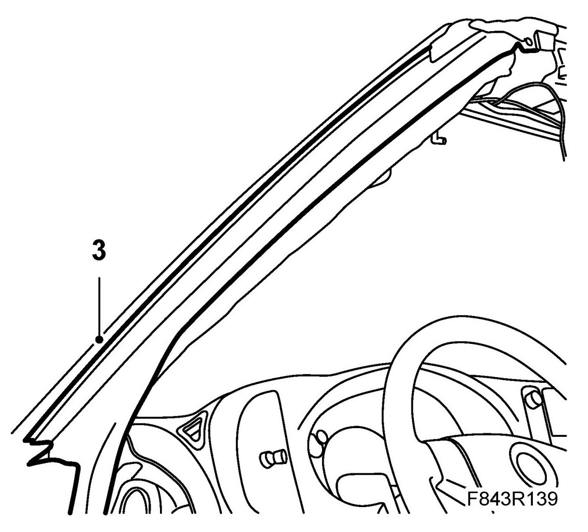
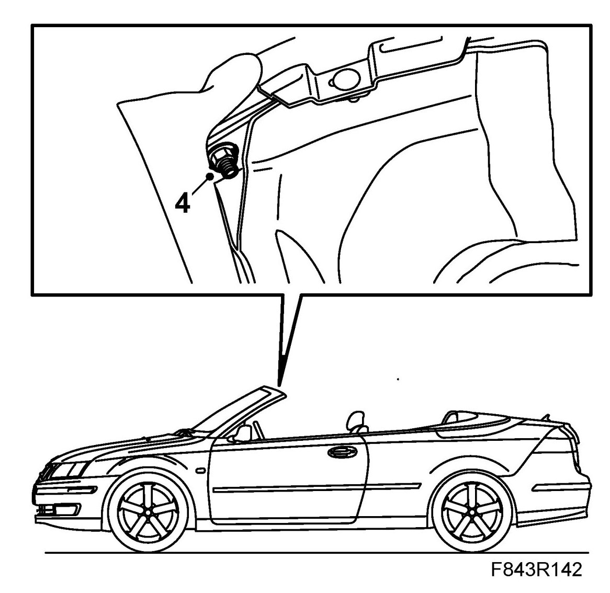
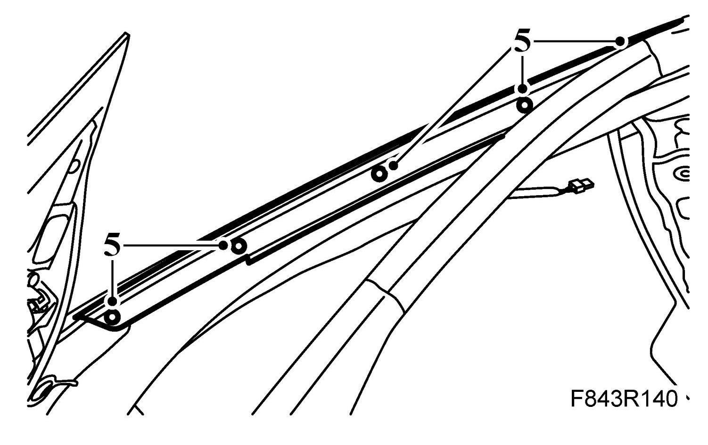
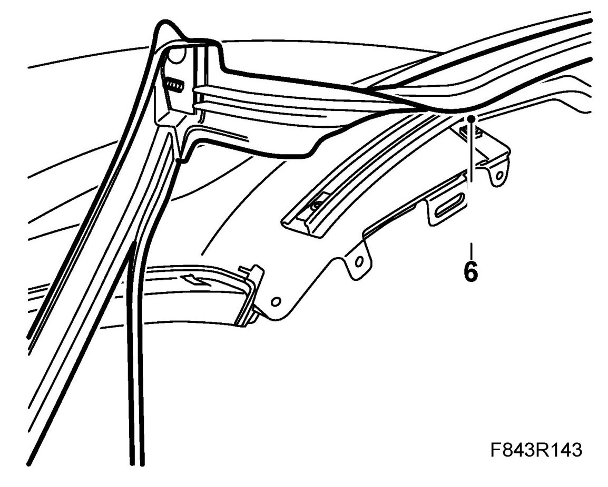
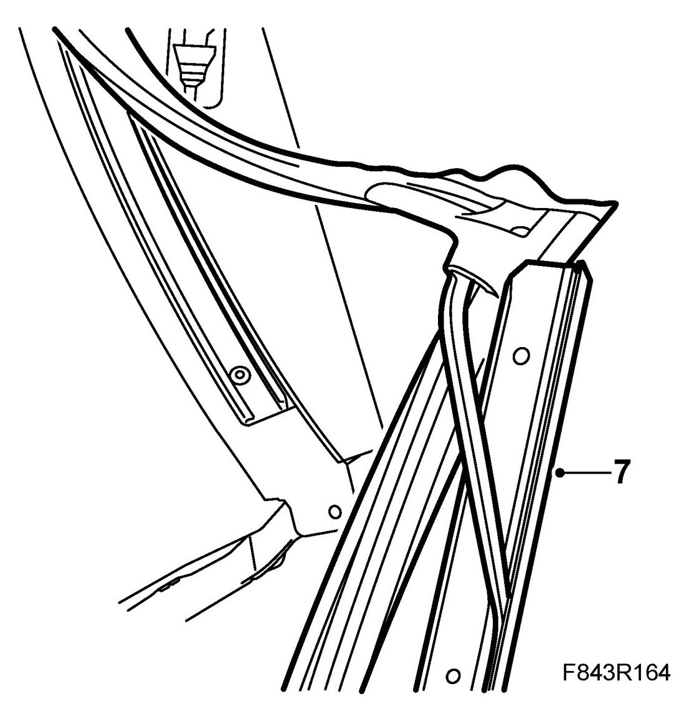
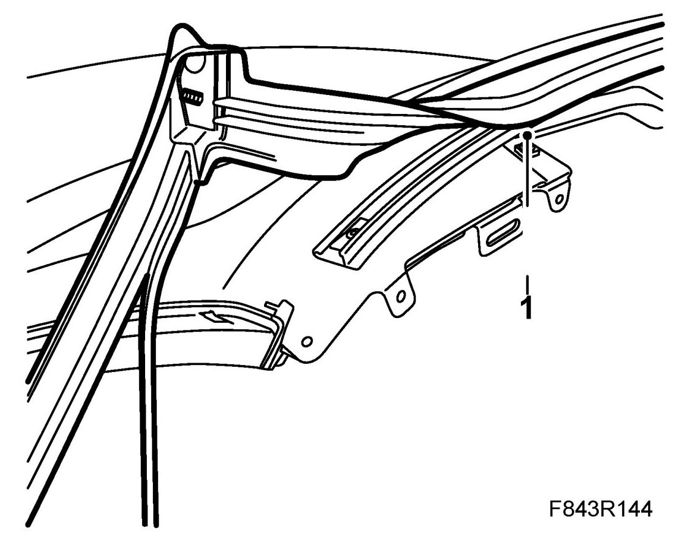
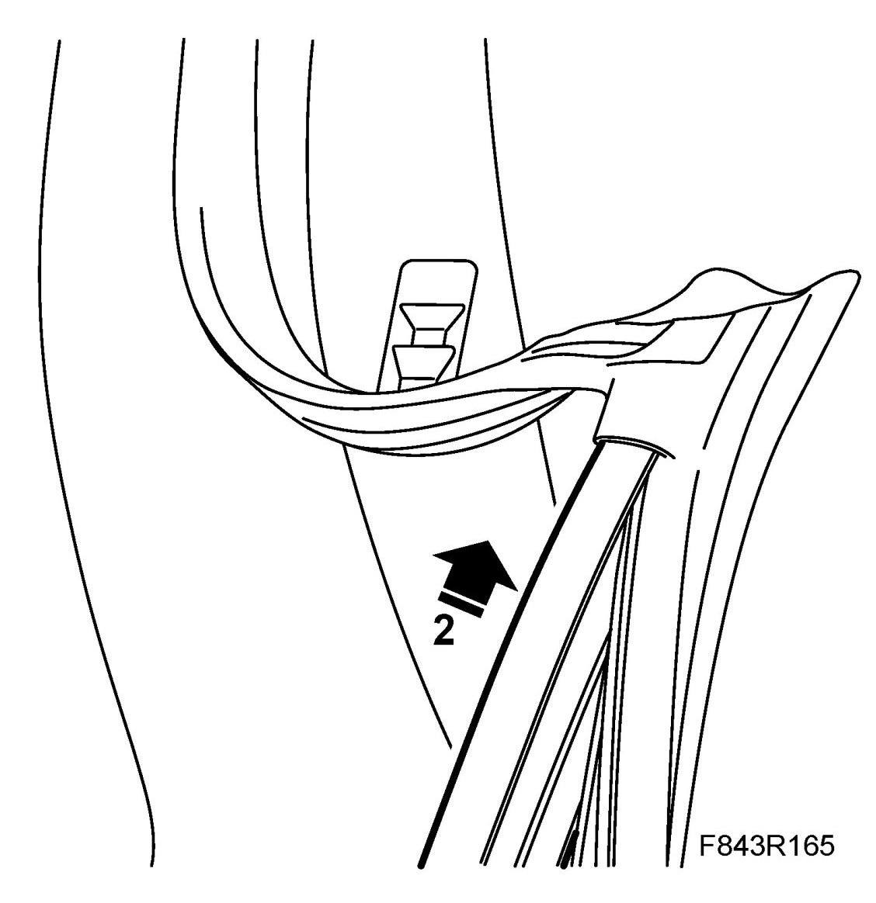
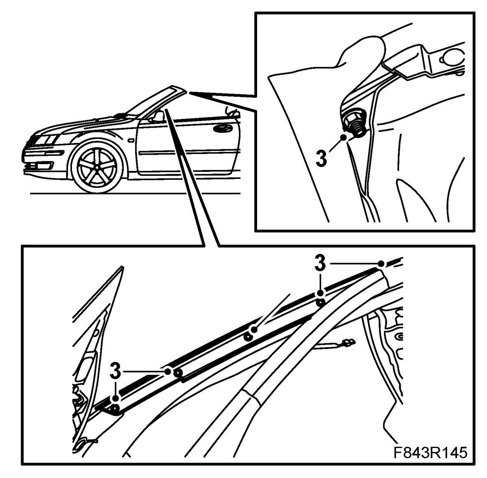
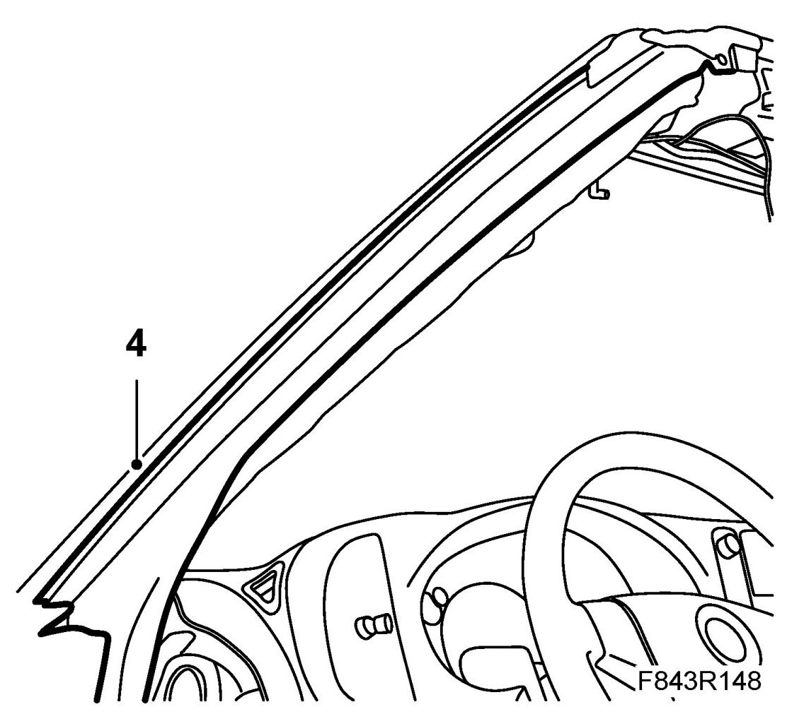

Windscreen Seal, CV
Windscreen Seal, CV
To remove
1. Retract the soft top.
2. Remove The upper windscreen frame trim, CV and A pillar trim, CV
3. Pull out the windscreen frame seal from the A pillar seal mount. Start at the bottom edge.

4. Remove the nuts from the windscreen frame seal.

5. Undo the screws from the A pillar trim moulding. Remove the moulding from the A pillar.

6. Lift up the moulding from the corner of the windscreen frame.
Pull out the seal from the upper seal mount.

7. Pull out the trim moulding from the corner of the rubber moulding. Pull away the thin rubber moulding from the inside of the trim moulding.

To fit
1. Fit the thin rubber moulding on the inside of the A pillar trim moulding using the removal tool. Start to fit from the lower edge.
NOTE: Do not stretch the rubber moulding during assembly.

2. Push the trim moulding into the corner of the rubber moulding.

3. Fit in the corner of the seal. Locate the seal stud in the hole in the windscreen frame and fit the nut. At the same time hold the trim moulding in position and fit the screws.

4. Fit the windscreen frame seal into the A pillar trim moulding by pushing it in place. Ensure that it is correctly located against the instrument panel and the bottom section of the door seal.

5. Fit the windscreen frame seal into the upper seal mount. First fit the foremost fixing lip and then the rearmost in order to lock the lips in place. Use the removal tool.
6. Check the fit of the moulding.
7. Fit A pillar trim, CV and The upper windscreen frame trim, CV. Ensure that the seal is properly located against the A pillar trim.
Cars with pinch protection: Carry out Programming the pinch protection.